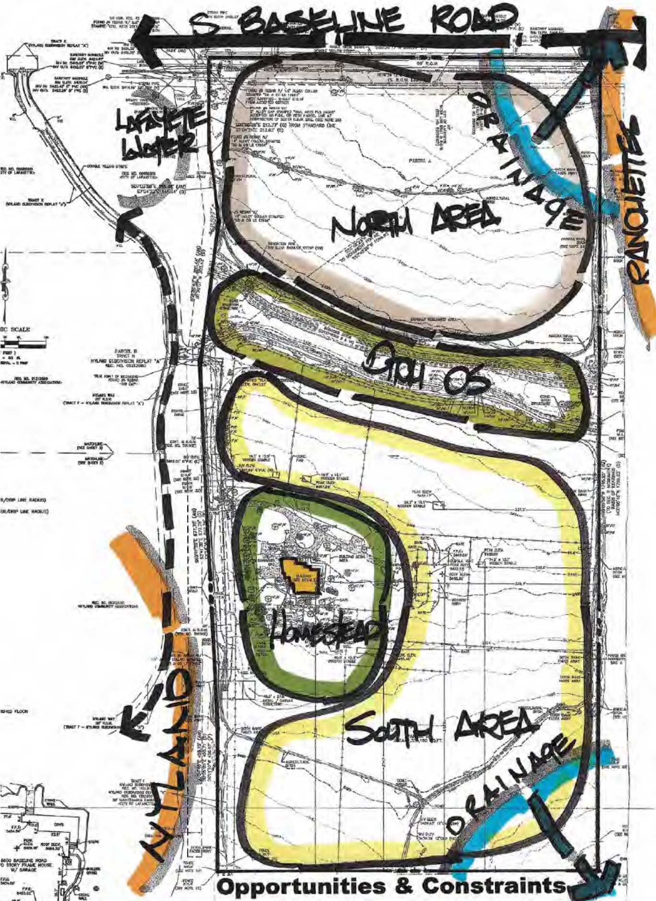
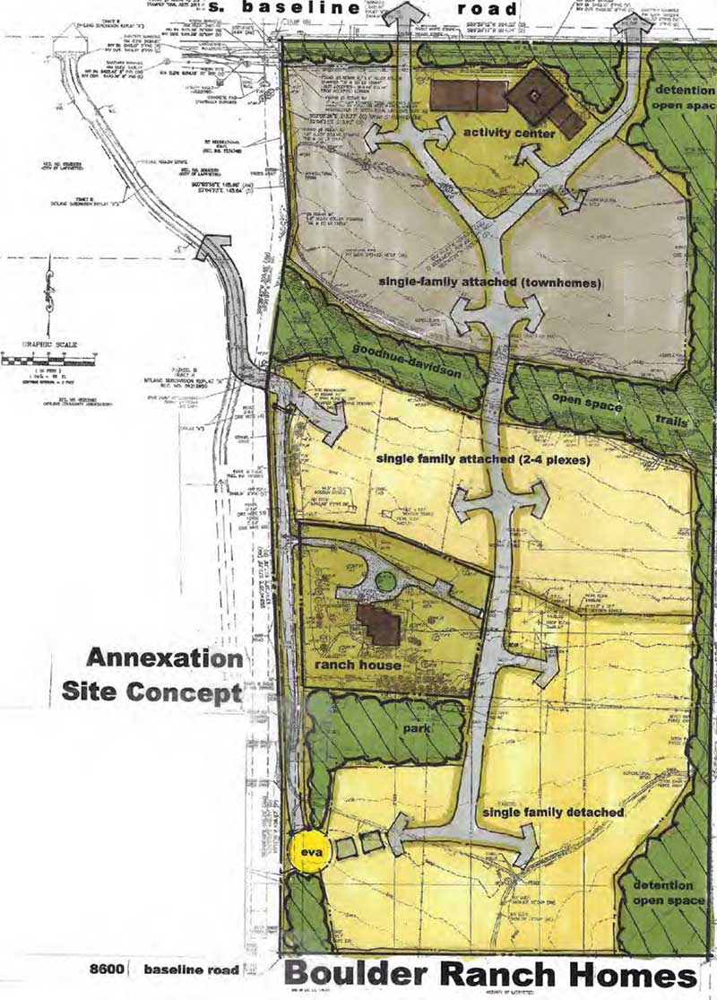
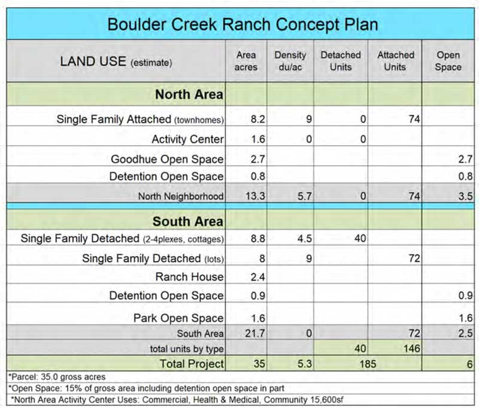

Current Situation
The new owner has proposed building 186 units on this site, which is currently zoned Rural Residential in Boulder County and has a horse barn, pastures, main ranch house, and outbuildings. The proposal includes single-family residential and multi-family units with "sustainable dwelling units" that serve Intellectual and Developmental Disability and aging-in-place residents, as well as a few units for "affordable" housing. The City of Lafayette would have to annex the property and rezone it for the owner to proceed. In 2017, the planning commission unanimously rejected a proposal from a different developer for 86 homes on this site.
Proposed Development
The proposed development would include 186 units, with a mix of single-family attached and detached homes.
Site Plan
All traffic would be directed to Baseline, adding significant congestion onto this two-lane road, particularly in cases of emergency.
The Details
Who:
The current owner, Stephen J. Tzap, purchased the property in 2024. He formed Big Zapper LLC and subsequently listed Aaron Burton with Burton Law Office in Denver to be his registered agent. Tzap also engaged a developer, Jack Bestall of Bestall Collaborative, who has submitted a "preapplication review" document with the City of Lafayette on behalf of Mr. Tzap.What:
The preapplication review is the first step in a lengthy process prior to any approvals being granted or denied. The owner/developer must get approval from the City of Lafayette to annex the property from Boulder County, engage in multiple meetings with various City officials, meet with surrounding neighbors, and, ultimately, receive permission from the City's Planning Commission and City Council before moving forward. Along the way, there are many opportunities for neighbors and concerned citizens to engage in this process.When:
The exact timeline is not yet available, but the process involves the steps outlined hereWhere:
The 8600 property is located near the western border of Lafayette in land near Open Space from four different jurisdictions: City of Boulder, City of Louisville, City of Lafayette, and Boulder County. The property is adjacent to an extended buffer zone that delineates this part of unincorporated Boulder County from the adjacent municipalities of Lafayette and Louisville. There is no development of this density anywhere in the immediate neighborhood.Why:
We believe that this development is out of scale for the still-rural nature of this neighborhood. Development planners in Boulder County and Lafayette have worked assiduously to avoid uncontrolled sprawl. This proposal leapfrogs existing opportunities for connected development with accompanying city services, in keeping with the City of Lafayette and Boulder County's comprehensive plans. Concerns also include escalating unsafe traffic congestion on Baseline, mounting concerns about future water availability, and an overarching belief that this kind of development is expensive and unwarranted at this time, in this place.
Breakdown of Development
The concept plan outlines the configuration with 74 attached single-family townhouses on the north end and 146 single-family detached homes on the south end of the 35-acre property.
Contact
For more information on the 8600 Baseline Development, complete the form below: